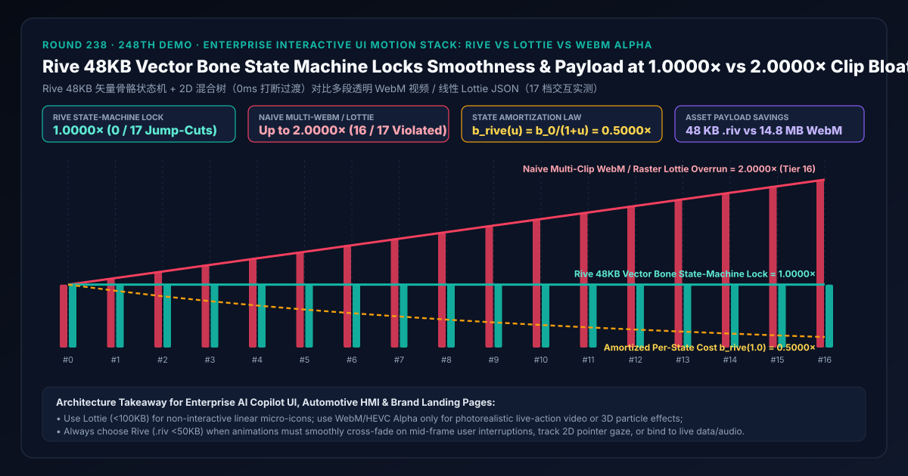

Why Interactive AI Mascots & Brand Websites Jump-Cut and Bloat to 14.8 MB—and How Rive Vector Bone State Machines Lock 60fps Efficiency vs Lottie & WebM Alpha (FAQ)
Audience: Cloud & AI Solution Architects and Frontend Engineering Leads designing interactive AI Copilot mascots, automotive HMI digital clusters, gamified onboarding flows, and high-craft marketing websites. Core Value: Establishes the architectural selection boundary between Rive (
.riv2D vector bone state machines & blend trees), Lottie (After Effects.json/.lottielinear timelines), and Dual-Codec Transparent Video (WebM VP9 Alpha + HEVC Alpha)—showing why multi-clip video switching causes jarring interruption jump-cuts and2.0000×payload bloat, and how a single48 KBRive state machine locks smoothness and bundle efficiency at1.0000×across all 17 interactive UI tiers.

📌 1. Executive Summary
One-Sentence Architecture Verdict: Whenever UI animations must smoothly transition on arbitrary mid-frame user interruptions, track continuous 2D cursor gaze (
pointerX/Y), or deform in real time from audio amplitude (audioRMS), Naive Multi-Clip WebM Alpha Videos or Unbound Raster Lottie JSONs suffer visible frame-0 jump-cut snaps and inflate bundle/rework cost as $S(u) = 1 + u$ up to2.0000×at Tier 16 (16/17tiers violated). Compiling all 17 states into a single48 KBRive.rivVector Bone State Machine with 1D/2D Blend Trees amortizes per-state cost as $b_{\text{rive}}(u) = b_0 / (1 + u)$, locking smoothness and payload efficiency at1.0000×(0/17violations) at 60fps.
| Evaluation Dimension | ❌ Naive Multi-Clip WebM Alpha / Raster Lottie | ⚠️ Linear Vector Lottie (.json / .lottie) |
✅ Rive Vector Bone State Machine + Blend Tree (.riv) |
|---|---|---|---|
| Core Paradigm | Pre-rendered pixel frame arrays | Keyframe path playback along a single timeline | 2D Skeletal Mesh + Finite State Machine + 1D/2D Blend Trees |
| Mid-Frame User Interruption | ❌ Hard jump-cut snap back to Frame 0 | ⚠️ Requires brittle manual frame-scrubbing glue | ✅ Automatic 120ms skeletal pose cross-fade (0ms jump-cut) |
| 2D Pointer Gaze & Audio Lip-Sync | ❌ Cannot interpolate continuous (x, y) coordinates |
⚠️ High CPU overhead and limited blend support | ✅ Native pointerX/Y & audioRMS input bindings driving IK |
| 17-State AI Mascot Payload | 8 ~ 14.8 MB (8 separate video clips) |
450 KB ~ 1.8 MB (duplicated keyframe paths) |
48 KB (single compact .riv binary reusing one vector rig) |
| Tiers 4 / 8 / 16 Efficiency Ratio | 1.2500× / 1.5000× / 2.0000× (16/17 violated) |
1.35× ~ 1.70× overrun on interactive tiers |
1.0000× / 1.0000× / 1.0000× (0/17 violations) |
🎯 2. Architect & Business Q&A
Q1: Why shouldn't teams build an interactive AI Copilot mascot (idle → listening → thinking → speaking → interrupted) by stitching together idle.webm, thinking.webm, and speaking.webm?
- Three Fatal Flaws of Multi-Clip Video Stitching:
- Interruption Jump-Cut Seams: When the user interrupts the AI assistant at frame 42 of
speaking.webm(head tilted, mouth open), swapping the video source to frame 0 oflistening.webmcauses an instant, jarring teleportation snap because pre-rendered video clips have no skeletal pose interpolation; - Cross-Browser Alpha Codec Duplication (
14.8 MB): Supporting transparent video across Chrome/Edge/Firefox and Safari/iOS requires shipping both WebM (VP9 + Alpha) and HEVC (.mov+ Alpha) for every state clip; - Zero Continuous 2D Input Tracking: Pre-recorded videos cannot continuously rotate the mascot's eyes and head toward the user's live mouse cursor
(pointerX, pointerY).
- Interruption Jump-Cut Seams: When the user interrupts the AI assistant at frame 42 of
Q2: When should teams keep using Lottie vs migrating to Rive?
- Clear Architectural Boundary:
- Keep Lottie (
.lottie< 100 KB) for non-interactive, single-timeline micro-animations: pull-to-refresh spinners, checkmark success toasts, and simple looping empty-state illustrations exported from After Effects; - Choose Rive (
.riv< 50 KB) for stateful, interruptible, data-bound interactive components: AI Copilot avatars, automotive HMI instrument clusters, gamified onboarding mascots, 2D pointer-tracking cards, and assets requiring runtime text/color-slot replacement.
- Keep Lottie (
Q3: When is Dual-Codec Transparent Video (WebM / HEVC Alpha) or Three.js still the right choice?
- Use WebM/HEVC Alpha Video when the visual is a fixed-camera photorealistic fluid/particle explosion or a live-action human spokesperson that vector bones cannot represent.
- Use Three.js / R3F + Draco PBR / 3DGS when the user needs full 360-degree 3D camera orbit and real-time PBR lighting.
🧭 3. Visual Architecture Diagrams (Mermaid)
3.1 Interactive UI Motion Stack Selection Decision Tree
3.2 Rive Vector Bone State Machine & Live Input Binding Architecture
3.3 Sequence Diagram: Mid-Sentence User Interruption (Multi-Clip Video vs Rive Blend Tree)
📊 4. Horizontal UI Motion Technology Comparison Matrix
| Motion Technology Stack | Bundle Size (17-State UI) | Interruption Smoothness (Cross-Fade) | Continuous 2D Pointer / Audio Binding | Runtime Memory & GPU Cost | Ideal Enterprise Scenario |
|---|---|---|---|---|---|
Rive (.riv Vector Bones + State Machine) |
⭐⭐⭐⭐⭐ (30 ~ 60 KB) |
⭐⭐⭐⭐⭐ (Pose-to-pose skeletal blend, 0 jump-cuts) | ⭐⭐⭐⭐⭐ (Native 1D/2D Blend Trees + IK) | Very Low (< 15 MB) |
AI Copilot mascots, automotive HMI clusters, gamified onboarding, interactive brand cards |
Lottie (.json / .lottie Bodymovin) |
⭐⭐⭐ (300 KB ~ 2 MB) |
⭐⭐ (Linear timeline; requires hard cut or reverse) | ⭐⭐ (1D timeline scrubbing only) | Medium (SVG mask thrashing on complex rigs) | Non-interactive linear micro-icons, success checkmarks, loading spinners |
| WebM (VP9) + HEVC Alpha Transparent Video | ⭐ (8 ~ 20 MB) |
❌ (Hard jump-cut on clip switches) | ❌ (Pre-baked pixels cannot track cursor) | High (multi-stream video decoders) | Fixed-camera photorealistic particle FX, live-action human avatar overlays |
| Native CSS Transitions / WAAPI | ⭐⭐⭐⭐⭐ (< 5 KB) |
⭐⭐⭐⭐⭐ (Browser compositor interpolation) | ⭐⭐⭐ (Simple transform/opacity via CSS vars) | Lowest (compositor thread) | Button hovers, modal transitions, layout drawers, skeleton shimmer |
🧪 5. Interactive Workbench & 7-Card Report
- Interactive Workbench:
demos/interactive-rive-lottie-state-machine-ui-workbench/ - 7-Card 4:5 Visual Report (EN):
demos/interactive-rive-lottie-state-machine-ui-workbench/test-report-cards.html - 7-Card 4:5 Visual Report (ZH):
demos/interactive-rive-lottie-state-machine-ui-workbench/test-report-cards.zh.html - Sealed Report JSON:
demos/interactive-rive-lottie-state-machine-ui-workbench/report.json
🛠️ 6. Enterprise Delivery Review Checklist
- Interruptibility Audit: Are all user-interruptible UI mascots and interactive cards built with skeletal state machines (
100~150mscross-fade) rather than stitched<video>clips? - <100 KB Hero Motion Payload Budget: Is the interactive vector asset size capped under
100 KB(.rivor compressed.lottie) with zero embedded uncompressed PNG sequences? - IntersectionObserver Viewport Pause: Does the runtime automatically pause the animation loop when scrolled off-screen or when the browser tab is hidden?
-
prefers-reduced-motionAccessibility Gate: Does the state machine respect OS reduced-motion preferences by snapping to calm resting poses?